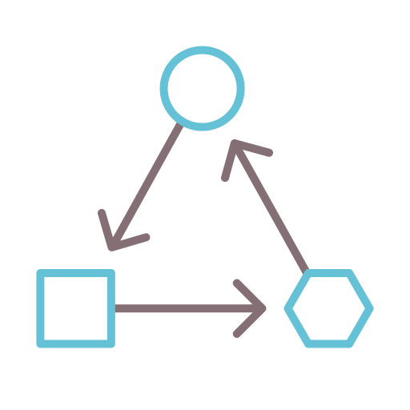

Definicion: Es el atributo de calidad que nos indica que tan facil es de cambiar agregar o eliminar alguna caracterisca al sistema sin afectar lo demas.
La modificabilidad tiene que ver con el cambio, y nuestro interés en él se centra en el costo y el riesgo de realizar cambios. Para planificar la modificabilidad, un arquitecto debe considerar cuatro preguntas:
|
de un modulo |
Hacer los modulos mas pequeños para que sean independientes de otros |
|
|
Separar los modulos que no tengan el mismo objetivo en otros modulos |
|

|
Reducir las dependencias de cualquier tipo |
|
encuadernacion |
Automatizar tareas sencillas como scripts |